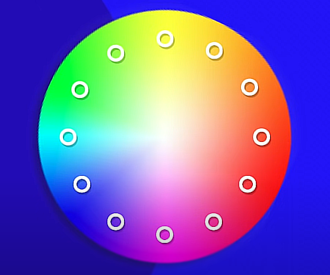
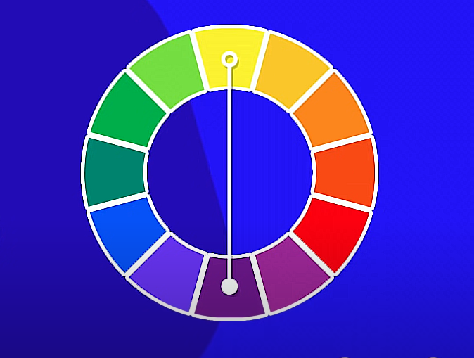
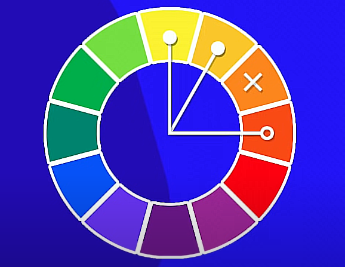
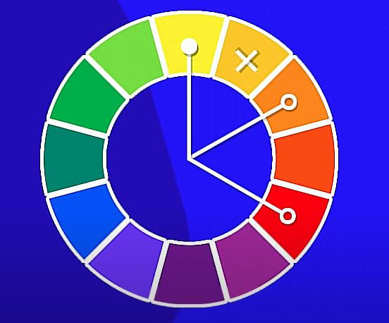
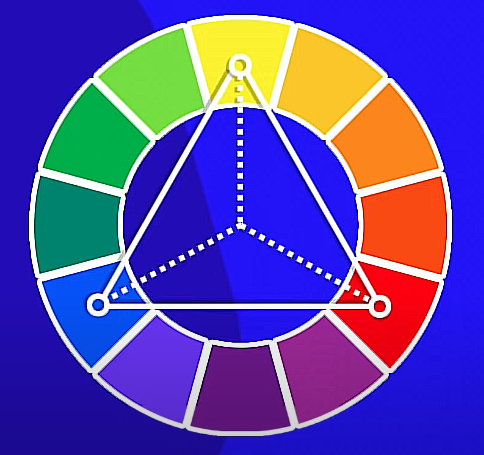
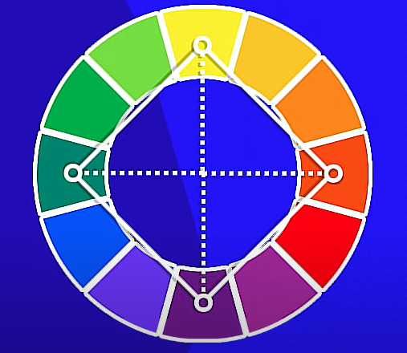

Harmonia das Cores
Círculo cromático
Cores complementares
Cores Análogas

Cores análogas junto de complementares

Cores análogas relacionadas
Cores intercaladas
Cores triádicas
Cores em quadrado
Cores tetrádicas

Monocromia